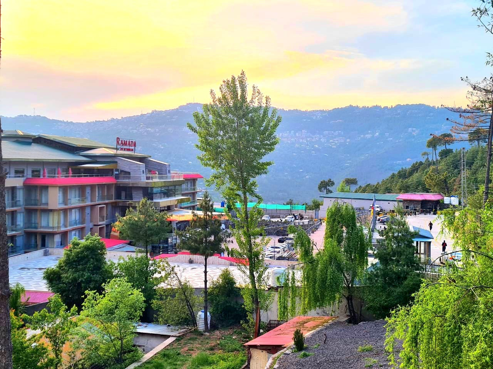
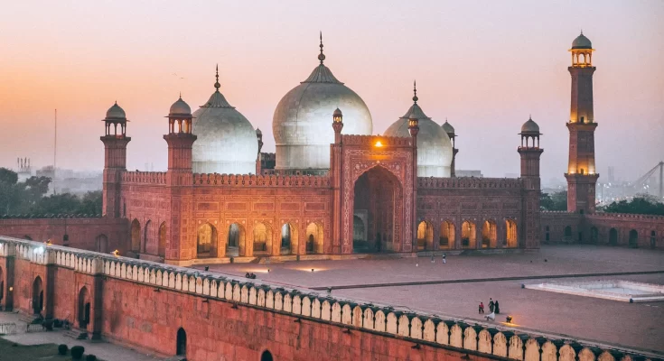
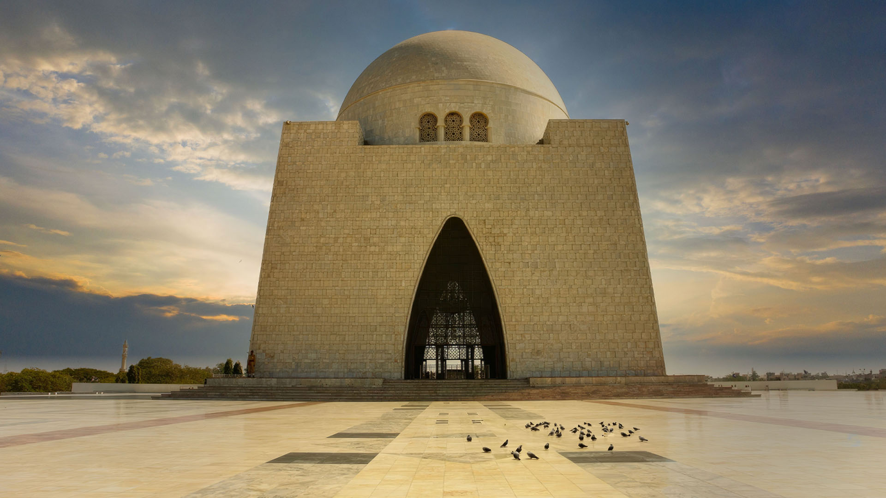

Skardu took my breath away with its raw, untouched beauty. Surrounded by towering mountains and crystal-clear lakes, it felt like I was in another world. I visited Shangrila Lake, where the reflection of the mountains danced on the water, and the silence was calming. The air was crisp, the people warm, and every view looked like a painting. Skardu is truly a place where nature speaks in silence.
Muree is a breathtakingly beautiful hill station in Pakistan, nestled in the Himalayan foothills make it perfect getaway.The picturesque veiws, pleasant weather, and exciting activities like hiking and horse riding attract tourists from al over. Muree's charm and natural beauty make it a must-visit destination in Pakistan.
A tour of Islamabad is a refreshing and memorable experience. As the capital city of Pakistan, Islamabad is known for its clean environment, modern infrastructure, and natural beauty.The city offers a perfect blend of urban development and scenic landscapes. Tourists can visit iconic landmarks like Faisal Mosque, Daman-e-Koh, Pakistan Monument, and Rawal Lake.

A tour of Lahore is a journey through history, culture, and vibrant city life. As one of Pakistan’s oldest and most culturally rich cities, Lahore offers a wide range of attractions. Tourists can explore historical sites like the Badshahi Mosque, Lahore Fort, and Shalimar Gardens.
A tour of Skardu is a dream come true for nature and adventure lovers. Located in Gilgit-Baltistan, Skardu is surrounded by majestic mountains, crystal-clear lakes, and breathtaking valleys. The serene beauty of places like Shangrila Resort, Upper Kachura Lake, and Satpara Lake leaves visitors in awe.

A tour of Karachi offers a vibrant mix of culture, history, and coastal beauty. As Pakistan’s largest city and economic hub, Karachi is full of life and diversity. Tourists can visit historical landmarks like Quaid-e-Azam’s Mausoleum, Mohatta Palace, and Frere Hall to explore the city’s rich heritage. The beaches, such as Clifton Beach and Hawksbay, offer a relaxing escape by the Arabian Sea.
